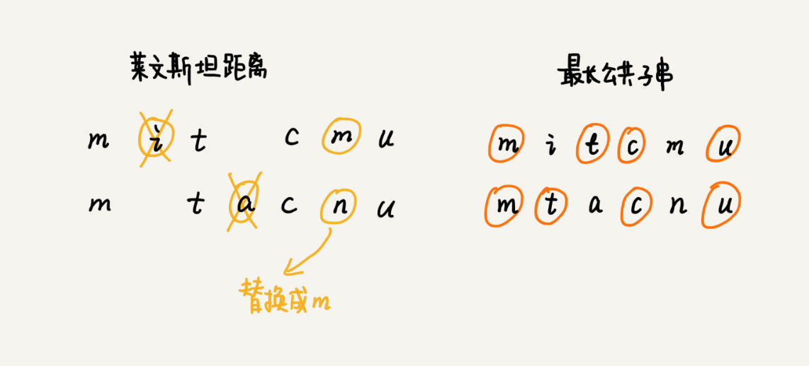

42 | 动态规划实战：如何实现搜索引擎中的拼写纠错功能？
在Trie 树那节我们讲过，利用 Trie 树，可以实现搜索引擎的关键词提示功能，这样可以节省用户输入搜索关键词的时间。实际上，搜索引擎在用户体验方面的优化还有很多，比如你可能经常会用的拼写纠错功能。
当你在搜索框中，一不小心输错单词时，搜索引擎会非常智能地检测出你的拼写错误，并且用对应的正确单词来进行搜索。作为一名软件开发工程师，你是否想过，这个功能是怎么实现的呢？

如何量化两个字符串的相似度？
计算机只认识数字，所以要解答开篇的问题，我们就要先来看，如何量化两个字符串之间的相似程度呢？有一个非常著名的量化方法，那就是编辑距离（Edit Distance）。
顾名思义，编辑距离指的就是，将一个字符串转化成另一个字符串，需要的最少编辑操作次数（比如增加一个字符、删除一个字符、替换一个字符）。编辑距离越大，说明两个字符串的相似程度越小；相反，编辑距离就越小，说明两个字符串的相似程度越大。对于两个完全相同的字符串来说，编辑距离就是 0。
根据所包含的编辑操作种类的不同，编辑距离有多种不同的计算方式，比较著名的有莱文斯坦距离（Levenshtein distance）和最长公共子串长度（Longest common substring length）。其中，莱文斯坦距离允许增加、删除、替换字符这三个编辑操作，最长公共子串长度只允许增加、删除字符这两个编辑操作。
而且，莱文斯坦距离和最长公共子串长度，从两个截然相反的角度，分析字符串的相似程度。莱文斯坦距离的大小，表示两个字符串差异的大小；而最长公共子串的大小，表示两个字符串相似程度的大小。
关于这两个计算方法，我举个例子给你说明一下。这里面，两个字符串 mitcmu 和 mtacnu 的莱文斯坦距离是 3，最长公共子串长度是 4。

了解了编辑距离的概念之后，我们来看，如何快速计算两个字符串之间的编辑距离？
如何编程计算莱文斯坦距离？
之前我反复强调过，思考过程比结论更重要，所以，我现在就给你展示一下，解决这个问题，我的完整的思考过程。
这个问题是求把一个字符串变成另一个字符串，需要的最少编辑次数。整个求解过程，涉及多个决策阶段，我们需要依次考察一个字符串中的每个字符，跟另一个字符串中的字符是否匹配，匹配的话如何处理，不匹配的话又如何处理。所以，这个问题符合多阶段决策最优解模型。
我们前面讲了，贪心、回溯、动态规划可以解决的问题，都可以抽象成这样一个模型。要解决这个问题，我们可以先看一看，用最简单的回溯算法，该如何来解决。
回溯是一个递归处理的过程。如果 a[i] 与 b[j] 匹配，我们递归考察 a[i+1] 和 b[j+1]。如果 a[i] 与 b[j] 不匹配，那我们有多种处理方式可选：
- 可以删除 a[i]，然后递归考察 a[i+1] 和 b[j]；
- 可以删除 b[j]，然后递归考察 a[i] 和 b[j+1]；
- 可以在 a[i] 前面添加一个跟 b[j] 相同的字符，然后递归考察 a[i] 和 b[j+1];
- 可以在 b[j] 前面添加一个跟 a[i] 相同的字符，然后递归考察 a[i+1] 和 b[j]；
- 可以将 a[i] 替换成 b[j]，或者将 b[j] 替换成 a[i]，然后递归考察 a[i+1] 和 b[j+1]。
我们将上面的回溯算法的处理思路，翻译成代码，就是下面这个样子：
private char[] a = "mitcmu".toCharArray();
private char[] b = "mtacnu".toCharArray();
private int n = 6;
private int m = 6;
private int minDist = Integer.MAX_VALUE; // 存储结果
// 调用方式 lwstBT(0, 0, 0);
public lwstBT(int i, int j, int edist) {
if (i == n || j == m) {
if (i < n) edist += (n-i);
if (j < m) edist += (m - j);
if (edist < minDist) minDist = edist;
return;
}
if (a[i] == b[j]) { // 两个字符匹配
lwstBT(i+1, j+1, edist);
} else { // 两个字符不匹配
lwstBT(i + 1, j, edist + 1); // 删除 a[i] 或者 b[j] 前添加一个字符
lwstBT(i, j + 1, edist + 1); // 删除 b[j] 或者 a[i] 前添加一个字符
lwstBT(i + 1, j + 1, edist + 1); // 将 a[i] 和 b[j] 替换为相同字符
}
}
根据回溯算法的代码实现，我们可以画出递归树，看是否存在重复子问题。如果存在重复子问题，那我们就可以考虑能否用动态规划来解决；如果不存在重复子问题，那回溯就是最好的解决方法。

在递归树中，每个节点代表一个状态，状态包含三个变量 (i, j, edist)，其中，edist 表示处理到 a[i] 和 b[j] 时，已经执行的编辑操作的次数。
在递归树中，(i, j) 两个变量重复的节点很多，比如 (3, 2) 和 (2, 3)。对于 (i, j) 相同的节点，我们只需要保留 edist 最小的，继续递归处理就可以了，剩下的节点都可以舍弃。所以，状态就从 (i, j, edist) 变成了 (i, j, min_edist)，其中 min_edist 表示处理到 a[i] 和 b[j]，已经执行的最少编辑次数。
看到这里，你有没有觉得，这个问题跟上两节讲的动态规划例子非常相似？不过，这个问题的状态转移方式，要比之前两节课中讲到的例子都要复杂很多。上一节我们讲的矩阵最短路径问题中，到达状态 (i, j) 只能通过 (i-1, j) 或 (i, j-1) 两个状态转移过来，而今天这个问题，状态 (i, j) 可能从 (i-1, j)，(i, j-1)，(i-1, j-1) 三个状态中的任意一个转移过来。

基于刚刚的分析，我们可以尝试着将把状态转移的过程，用公式写出来。这就是我们前面讲的状态转移方程。
如果：a[i]!=b[j]，那么：min_edist(i, j) 就等于：
min(min_edist(i-1,j)+1, min_edist(i,j-1)+1, min_edist(i-1,j-1)+1)
如果：a[i]==b[j]，那么：min_edist(i, j) 就等于：
min(min_edist(i-1,j)+1, min_edist(i,j-1)+1，min_edist(i-1,j-1))
其中，min 表示求三数中的最小值。
了解了状态与状态之间的递推关系，我们画出一个二维的状态表，按行依次来填充状态表中的每个值。

我们现在既有状态转移方程，又理清了完整的填表过程，代码实现就非常简单了。我将代码贴在下面，你可以对比着文字解释，一起看下。
public int lwstDP(char[] a, int n, char[] b, int m) {
int[][] minDist = new int[n][m];
for (int j = 0; j < m; ++j) { // 初始化第 0 行:a[0..0] 与 b[0..j] 的编辑距离
if (a[0] == b[j]) minDist[0][j] = j;
else if (j != 0) minDist[0][j] = minDist[0][j-1]+1;
else minDist[0][j] = 1;
}
for (int i = 0; i < n; ++i) { // 初始化第 0 列:a[0..i] 与 b[0..0] 的编辑距离
if (a[i] == b[0]) minDist[i][0] = i;
else if (i != 0) minDist[i][0] = minDist[i-1][0]+1;
else minDist[i][0] = 1;
}
for (int i = 1; i < n; ++i) { // 按行填表
for (int j = 1; j < m; ++j) {
if (a[i] == b[j]) minDist[i][j] = min(
minDist[i-1][j]+1, minDist[i][j-1]+1, minDist[i-1][j-1]);
else minDist[i][j] = min(
minDist[i-1][j]+1, minDist[i][j-1]+1, minDist[i-1][j-1]+1);
}
}
return minDist[n-1][m-1];
}
private int min(int x, int y, int z) {
int minv = Integer.MAX_VALUE;
if (x < minv) minv = x;
if (y < minv) minv = y;
if (z < minv) minv = z;
return minv;
}
你可能会说，我虽然能看懂你讲的思路，但是遇到新的问题的时候，我还是会感觉到无从下手。这种感觉是非常正常的。关于复杂算法问题的解决思路，我还有一些经验、小技巧，可以分享给你。
当我们拿到一个问题的时候，我们可以先不思考，计算机会如何实现这个问题，而是单纯考虑“人脑”会如何去解决这个问题。人脑比较倾向于思考具象化的、摸得着看得见的东西，不适合思考过于抽象的问题。所以，我们需要把抽象问题具象化。那如何具象化呢？我们可以实例化几个测试数据，通过人脑去分析具体实例的解，然后总结规律，再尝试套用学过的算法，看是否能够解决。
除此之外，我还有一个非常有效、但也算不上技巧的东西，我也反复强调过，那就是多练。实际上，等你做多了题目之后，自然就会有感觉，看到问题，立马就能想到能否用动态规划解决，然后直接就可以寻找最优子结构，写出动态规划方程，然后将状态转移方程翻译成代码。
如何编程计算最长公共子串长度？
前面我们讲到，最长公共子串作为编辑距离中的一种，只允许增加、删除字符两种编辑操作。从名字上，你可能觉得它看起来跟编辑距离没什么关系。实际上，从本质上来说，它表征的也是两个字符串之间的相似程度。
这个问题的解决思路，跟莱文斯坦距离的解决思路非常相似，也可以用动态规划解决。我刚刚已经详细讲解了莱文斯坦距离的动态规划解决思路，所以，针对这个问题，我直接定义状态，然后写状态转移方程。
每个状态还是包括三个变量 (i, j, max_lcs)，max_lcs 表示 a[0…i] 和 b[0…j] 的最长公共子串长度。那 (i, j) 这个状态都是由哪些状态转移过来的呢？
我们先来看回溯的处理思路。我们从 a[0] 和 b[0] 开始，依次考察两个字符串中的字符是否匹配。
- 如果 a[i] 与 b[j] 互相匹配，我们将最大公共子串长度加一，并且继续考察 a[i+1] 和 b[j+1]。
- 如果 a[i] 与 b[j] 不匹配，最长公共子串长度不变，这个时候，有两个不同的决策路线：
- 删除 a[i]，或者在 b[j] 前面加上一个字符 a[i]，然后继续考察 a[i+1] 和 b[j]；
- 删除 b[j]，或者在 a[i] 前面加上一个字符 b[j]，然后继续考察 a[i] 和 b[j+1]。
反过来也就是说，如果我们要求 a[0…i] 和 b[0…j] 的最长公共长度 max_lcs(i, j)，我们只有可能通过下面三个状态转移过来：
- (i-1, j-1, max_lcs)，其中 max_lcs 表示 a[0…i-1] 和 b[0…j-1] 的最长公共子串长度；
- (i-1, j, max_lcs)，其中 max_lcs 表示 a[0…i-1] 和 b[0…j] 的最长公共子串长度；
- (i, j-1, max_lcs)，其中 max_lcs 表示 a[0…i] 和 b[0…j-1] 的最长公共子串长度。
如果我们把这个转移过程，用状态转移方程写出来，就是下面这个样子：
如果：a[i]==b[j]，那么：max_lcs(i, j) 就等于：
max(max_lcs(i-1,j-1)+1, max_lcs(i-1, j), max_lcs(i, j-1))；
如果：a[i]!=b[j]，那么：max_lcs(i, j) 就等于：
max(max_lcs(i-1,j-1), max_lcs(i-1, j), max_lcs(i, j-1))；
其中 max 表示求三数中的最大值。
有了状态转移方程，代码实现就简单多了。我把代码贴到了下面，你可以对比着文字一块儿看。
public int lcs(char[] a, int n, char[] b, int m) {
int[][] maxlcs = new int[n][m];
for (int j = 0; j < m; ++j) {// 初始化第 0 行：a[0..0] 与 b[0..j] 的 maxlcs
if (a[0] == b[j]) maxlcs[0][j] = 1;
else if (j != 0) maxlcs[0][j] = maxlcs[0][j-1];
else maxlcs[0][j] = 0;
}
for (int i = 0; i < n; ++i) {// 初始化第 0 列：a[0..i] 与 b[0..0] 的 maxlcs
if (a[i] == b[0]) maxlcs[i][0] = 1;
else if (i != 0) maxlcs[i][0] = maxlcs[i-1][0];
else maxlcs[i][0] = 0;
}
for (int i = 1; i < n; ++i) { // 填表
for (int j = 1; j < m; ++j) {
if (a[i] == b[j]) maxlcs[i][j] = max(
maxlcs[i-1][j], maxlcs[i][j-1], maxlcs[i-1][j-1]+1);
else maxlcs[i][j] = max(
maxlcs[i-1][j], maxlcs[i][j-1], maxlcs[i-1][j-1]);
}
}
return maxlcs[n-1][m-1];
}
private int max(int x, int y, int z) {
int maxv = Integer.MIN_VALUE;
if (x > maxv) maxv = x;
if (y > maxv) maxv = y;
if (z > maxv) maxv = z;
return maxv;
}
解答开篇
今天的内容到此就讲完了，我们来看下开篇的问题。
当用户在搜索框内，输入一个拼写错误的单词时，我们就拿这个单词跟词库中的单词一一进行比较，计算编辑距离，将编辑距离最小的单词，作为纠正之后的单词，提示给用户。
这就是拼写纠错最基本的原理。不过，真正用于商用的搜索引擎，拼写纠错功能显然不会就这么简单。一方面，单纯利用编辑距离来纠错，效果并不一定好；另一方面，词库中的数据量可能很大，搜索引擎每天要支持海量的搜索，所以对纠错的性能要求很高。
针对纠错效果不好的问题，我们有很多种优化思路，我这里介绍几种。
- 我们并不仅仅取出编辑距离最小的那个单词，而是取出编辑距离最小的 TOP 10，然后根据其他参数，决策选择哪个单词作为拼写纠错单词。比如使用搜索热门程度来决定哪个单词作为拼写纠错单词。
- 我们还可以用多种编辑距离计算方法，比如今天讲到的两种，然后分别编辑距离最小的 TOP 10，然后求交集，用交集的结果，再继续优化处理。
- 我们还可以通过统计用户的搜索日志，得到最常被拼错的单词列表，以及对应的拼写正确的单词。搜索引擎在拼写纠错的时候，首先在这个最长被拼错单词列表中查找。如果一旦找到，直接返回对应的正确的单词。这样纠错的效果非常好。
- 我们还有更加高级一点的做法，引入个性化因素。针对每个用户，维护这个用户特有的搜索喜好，也就是常用的搜索关键词。当用户输入错误的单词的时候，我们首先在这个用户常用的搜索关键词中，计算编辑距离，查找编辑距离最小的单词。
针对纠错性能方面，我们也有相应的优化方式。我讲两种分治的优化思路。
- 如果纠错功能的 TPS 不高，我们可以部署多台机器，每台机器运行一个独立的纠错功能。当有一个纠错请求的时候，我们通过负载均衡，分配到其中一台机器，来计算编辑距离，得到纠错单词。
- 如果纠错系统的响应时间太长，也就是，每个纠错请求处理时间过长，我们可以将纠错的词库，分割到很多台机器。当有一个纠错请求的时候，我们就将这个拼写错误的单词，同时发送到这多台机器，让多台机器并行处理，分别得到编辑距离最小的单词，然后再比对合并，最终决定出一个最优的纠错单词。
真正的搜索引擎的拼写纠错优化，肯定不止我讲的这么简单，但是万变不离其宗。掌握了核心原理，就是掌握了解决问题的方法，剩下就靠你自己的灵活运用和实战操练了。
内容小结
动态规划的三节内容到此就全部讲完了，不知道你掌握得如何呢？
动态规划的理论尽管并不复杂，总结起来就是“一个模型三个特征”。但是，要想灵活应用并不简单。要想能真正理解、掌握动态规划，你只有多练习。
这三节中，加上课后思考题，总共有 8 个动态规划问题。这 8 个问题都非常经典，是我精心筛选出来的。很多动态规划问题其实都可以抽象成这几个问题模型，所以，你一定要多看几遍，多思考一下，争取真正搞懂它们。
只要弄懂了这几个问题，一般的动态规划问题，你应该都可以应付。对于动态规划这个知识点，你就算是入门了，再学习更加复杂的就会简单很多。
课后思考
我们有一个数字序列包含 n 个不同的数字，如何求出这个序列中的最长递增子序列长度？比如 2, 9, 3, 6, 5, 1, 7 这样一组数字序列，它的最长递增子序列就是 2, 3, 5, 7，所以最长递增子序列的长度是 4。